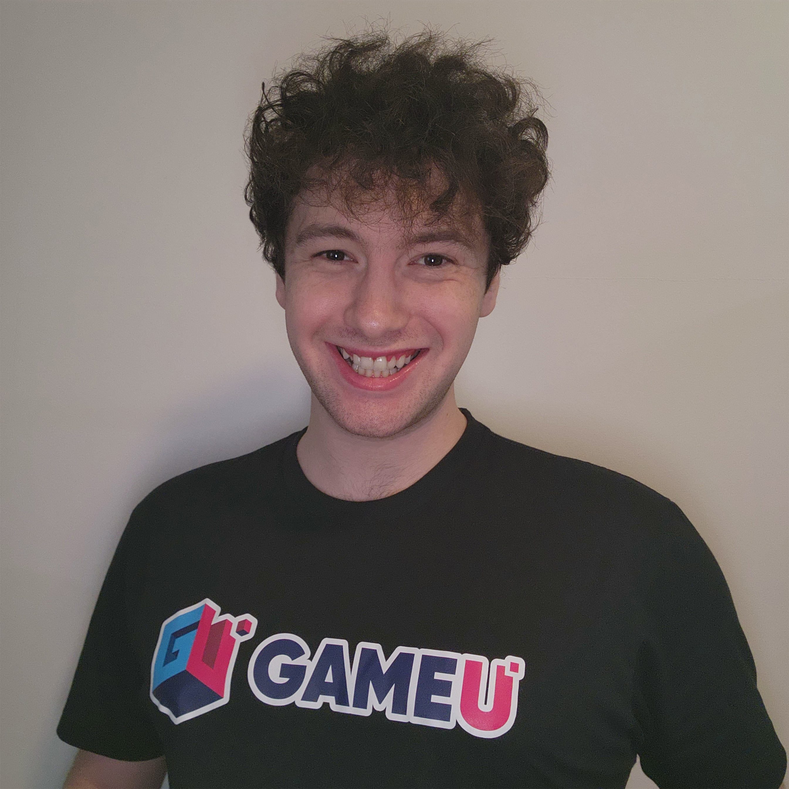

About Me
I am actively seeking full-time positions for game design teams!
I'm 24 years old with a BS in Game Design & Development from Rochester Institute of Technology, and was born and raised in NYC. I wanted to be a game developer since
7th grade, which was when I started self-teaching programming and paying attention to the industry. I primarily focused on programming and logic-driven thinking for a long time,
but after finally gaining some real industry experience, my true passion and strengths in game design shone through. I believe
I am truly a strong candidate for a game design team, and my technical background will allow me to work with programming teams very easily (among other advantages).
I believe that one of my best qualities is my ability to be flexible. This being said and despite my main focus being design, I am always open to other roles including
programming, balance work, and even voice acting.
I've played multiple games at top rank and professional levels, including Team Fortress 2, CS:GO, and Division 1 Collegiate
Overwatch here at RIT. This means that aside from formal experience, I have a very keen eye for game design and balance at a fundamental level.
Contact me at aidanroberts629@gmail.com, or connect with me on LinkedIn.
